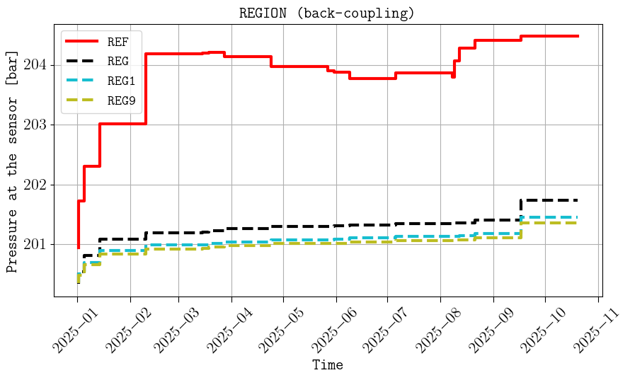

Examples
Example 1
We consider the configuration file example1.txt in the examples folder (the animation in the Github home page was based on this configuration file). If the results are to be saved in a folder called ‘hello_world’, this is achieved by the following command:
expreccs -i example1.txt -o hello_world
Then we can change in line 14 the BC projections from the regional simulations from ‘flux’ to ‘pres’, and run the following command to only simulate the site model:
expreccs -i example1_pres.txt -o hello_world -m site
We can do the same to add the pore volumes from the regional reservoir on the site boundaries by setting in line 14 ‘porvproj’, and to also visualize the results in PNGs figures, we run the following command:
expreccs -i example1_porvproj.txt -o hello_world -m site
Finally, we consider the case where we add injector/producers on the site boundary, and to also visualize the results in PNGs figures, we run the following command:
expreccs -i example1_wells.txt -o hello_world -m site -p yes
Below are some of the figures generated inside the postprocessing folder:


Final water flux (sm3/day) in the x direction for (top) the reference, (middle) regional, and (bottom) site (with fluxes as BC).

Comparison of cell pressures on the sensor location (top), well BHPs (middle), and minimum distance from the CO2 plume to the site boundaries (bottom).
Example 2
The configuration file example2.txt set a more complex geological model with more grid cells (1 417 500). This was used to generate the animation (using ResInsight) in the introduction section by running
expreccs -i example2.txt -m reference
Generic (under development)
See/run the last lines (34 to 42) in the test_main.py for an example where expreccs is used in two given models (regional and site, in this case they are created using the expreccs package, but in general can be any given geological models), generating a new input deck where the pressures are projected.
expreccs -e name_of_folder_for_the_regional_model,name_of_folder_for_the_site_model
Back-coupling (under development)
We consider the configuration file example1_back.txt in the examples folder. The plan is to update properties (e.g., transmissibility multipliers) in the regional model from features (e.g., faults) in the site model (i.e., not included in the regional model). By running:
expreccs -i example1_back.txt -o back-coupling -m all -p yes
This is one of the generated figures:
The figures in the postprocessing includes the results for the first two iterations and the last one (in this case 9 since the number of iteration is set to 10 in line 22 of the configuration_file). To visualize/compare results between any of the iterations, we can use our friend plopm.
Tip
You can install plopm by executing in the terminal: pip install git+https://github.com/cssr-tools/plopm.git.
For example, to show the difference in the spatial maps for pressure at iteration 4 and 7 at the third restart, this is achieved by executing:
plopm -i back-coupling/output/regional_7/regional_7,back-coupling/output/regional_4/regional_4 -v pressure -r 3 -s ,,1 -c rainbow -n "lambda x, _: f'{x:.2f}'" -d 5,5
And to show the comparison for the summary vector FPR for iterations 1, 5, 7, and 9:
plopm -i back-coupling/output/regional_1/regional_1,back-coupling/output/regional_5/regional_5,back-coupling/output/regional_7/regional_7,back-coupling/output/regional_9/regional_9 -v fpr -d 5,5 -f 10